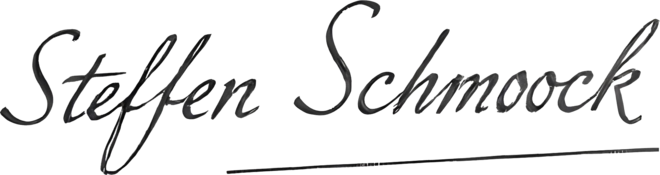

1250 Jahre Gotha in 50 Minuten: Wie ein ganzes Festjahr in einen Film passt
Ein Jahr voller Konzerte, Feste, Ausstellungen und Ehrungen — und für den Film dazu gibt es höchstens 50 Minuten. Genau das ist die Aufgabe beim offiziellen Aftermovie zum Festjahr „1250 Jahre Gotha“.
Das Festjahr lief von Oktober 2024 bis Oktober 2025. Im Auftrag der KulTourStadt Gotha und der Stadt Gotha produziert x@motion den Film, mit finanzieller Unterstützung der Kreissparkasse Gotha. Er soll die Höhepunkte des Jubiläumsjahres zusammenfassen. Welche das sind, hat Oberbürgermeister Knut Kreuch selbst festgelegt. Er führt auch als Moderator vor der Kamera durch den Film.
- 50:00Minuten Kinolimit
- 12Kapitel
- 250.000Besucher beim Thüringentag
- 7+Kamerapartner
Zwölf Kapitel für ein Jahr
Wer ein Jahr auf 50 Minuten verdichtet, muss entscheiden — und vieles weglassen. Der Film ist in zwölf Segmente gegliedert, vom Prolog über die Eröffnung des Festjahres bis zum Epilog im Schlosshof:
- Eröffnung des Festjahres in der Stadthalle, mit Friedensteinfest und Festumzug
- Ernestinum, Myconius-Medaille und der Deutsche Städtetag
- Fasching und der Sturm aufs Rathaus
- Der MDR-Osterspaziergang
- Drei Ausstellungen: „Gotha Genial?!“, die Unternehmensschau im KSK-Kundencenter und „Kunst.Stadt.Gotha.“
- Der Thüringentag
- Der Sparkassen-Schlossparklauf
- Die Taufe der Rose „Gotha 1250“ durch Ute Freudenberg
- Friedenstein Open Air, Barockfest und „Gotha glüht“
- Karat und Peter Maffay: Eintrag ins Goldene Buch und Thüringer Löwe
- Epilog und Abspann, mit Drohnenaufstieg über dem Stadtpanorama
Der Thüringentag: das größte Kapitel
Den meisten Platz bekommt der Thüringentag, mit einer Zielzeit von 8:30 Minuten. Das ist angemessen: Rund 250.000 Menschen waren in den Festtagen in der Innenstadt, das Festgelände umfasste etwa 60.000 Quadratmeter. Im Film sind unter anderem die Wasserkunst mit dem Streitgespräch zwischen St. Gothardus und Landgraf Balthasar, die Finanzmeile der Kreissparkasse mit den 3x3-Basketball-Olympiasiegern, die Energiemeile der Stadtwerke, die Blaulichtmeile und ein O-Ton von Ministerpräsident Mario Voigt zu sehen.
Dazu kommen die Geschwister Weißheit mit ihrer Hochseilartistik über den Dächern von Gotha, der Festumzug mit mehr als 100 Bildern und knapp 3.000 Teilnehmerinnen und Teilnehmern und zum Abschluss das Doppelfeuerwerk.
Sieben Kamerapartner, ein Film
Ein Jahr dieser Größe filmt man nicht allein. Hinter der Kamera standen sieben Kamerapartner aus der Region, darunter Kotsch Showtechnik und Sebastian Spelda, dazu unser eigenes Team. Für die Luftaufnahmen waren Felix Kalbe und ich mit der Drohne unterwegs. Die Idee zum Film entstand gemeinsam mit Knut Kreuch und Martin Falkenstein. Das Buch schreiben Mario Greiner und ich, Mario Greiner leitet außerdem die Produktion. Den Thüringentag hat Bianka Schwarz von der KulTourStadt Gotha koordiniert.
Zu den Interviewpartnern gehören neben dem Ministerpräsidenten Ute Freudenberg, Álvaro Soler, Thomas Anders, Karat, Peter Maffay und Museumskuratorin Kristin Wenzel. Unterstützt wurde das Projekt unter anderem von der Stiftung Schloss Friedenstein, dem Herzoglichen Museum Gotha, der Staatskanzlei Thüringen und der Thüringen Philharmonie Gotha-Eisenach.
Texte, die nicht nach Maschine klingen
Die Texte stimmen wir eng mit dem Büro des Oberbürgermeisters ab. Bereits eingesprochene O-Töne bleiben unangetastet. Alle offenen Passagen haben wir noch einmal redaktionell überarbeitet, damit sie nicht „KI-glatt“ klingen und ohne Floskeln auskommen.
Ein Punkt ist mir dabei wichtig: Die Off-Stimme im Film ist eine KI-Stimme (ElevenLabs). Bei einer öffentlichen Auftragsproduktion gehört das offen gesagt, und wir kennzeichnen KI-generierte Inhalte nach unseren eigenen Standards zu Art. 50 des EU-AI-Acts.
Zwölf Segmente im Blick behalten
Damit bei zwölf Kapiteln nichts durchrutscht, nutze ich ein eigenes, interaktives Fortschritts-Tool, das ich für unsere Produktionen selbst gebaut habe. Es zeigt für jedes Segment, wo es steht: Konzept, Text, Musik, Schnitt, Freigaben, Farbe, Ton und Finalisierung. So sehe ich auf einen Blick, wo es hakt und was als Nächstes fällig ist.
Was uns antreibt
Ein Festjahr besteht aus tausend Momenten, und der Film kann nur einen kleinen Teil zeigen. Deshalb kommt es auf die Auswahl und die Dramaturgie an: Was erzählt Gotha heute, und wie verbindet sich Geschichte mit Gegenwart? Das ist der rote Faden, der den Film vom Prolog bis zum Abspann trägt.
